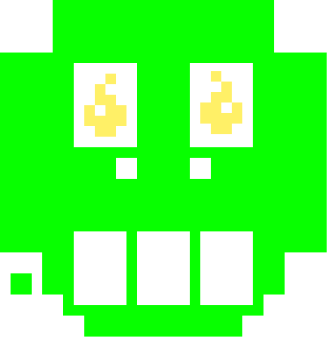
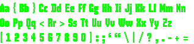
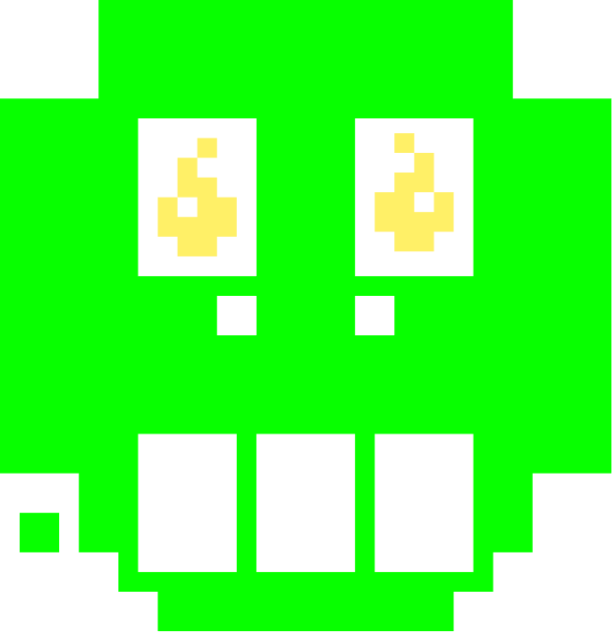
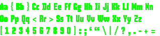

Blah Blah Interactive Type Specimen
Visit ProjectOverview
A visually appealing and interactive type specimen, based on real world inspiration gained through a lens directed at the lettering and typography existing in my direct and online environment.
After sufficient inspiration, I developed an interactive prototype depicting the Fontface “BlahBLah” by Pieter van Rosmalen.
Skills
- Graphic Design
- Prototyping
- Visual Interface Design
- Concepting
- Animation
Progress
The Design process for the interactive type specimen started with exploring my direct environment in search of interesting usage of lettering and typography. In this initial exploration I discovered several posters that made use of heavily pixelated fontfaces that sparked my interest. After collecting feedback concerning my findnings, I started delving more into the history of early computer graphics and the fonts that were used.
Based on the newly acquired information I further diversified by creating moodbards, and mindmapping that eventually converged into finding a suitable typeface for the assignment. This Typeface being “BlahBlah” by Pieter van Rosmalen.